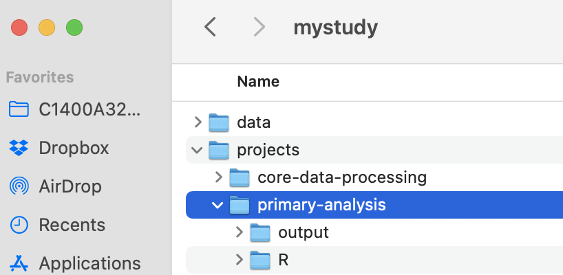

Chapter 3 Directory Structure and Code Repositories
Contributors: Kunal Mishra, Jade Benjamin-Chung, Ben Arnold
The backbone of your project workflow is the file directory so it makes sense to spend time organizing the directory. Note that directory is the technical term for the system used to organize individual files. Most non-UNIX environments use a folder analogy, and directory and folder can be used interchangeably in a lot of cases. A well organized directory will make everything that follows much easier. Just like a well designed kitchen is essential to enjoy cooking (and avoid clutter), a well designed directory helps you enjoy working and stay organized in a complex project with literally thousands of related files. Just like a disorganized kitchen (“now where did I put that spatula?”) a disorganized project directory creates confusion, lost time, stress, and mistakes.
Another huge advantage of maintaining a regular/predictable directory structure within a project and across projects is that it makes it more intuitive. When a directory is intuitive, it is easier to work collaboratively across a larger team; everybody can predict (at least approximately) where files should be.
Nested within your directory will be a code repository. Sometimes we find it useful to manage the code repository using version control, such as git/GitHub.
Other chapters will discuss coding practices, data management, and GitHub/version control that will build from the material here.
Carrying the kitchen analogy further: here, we are designing the kitchen. Then, we’ll discuss approaches for how to cook in the kitchen that we designed/built.
3.1 Small and large projects
Our experience is that the overwhelming majority of projects come in two sizes: small and large. We recommend setting up your directory structure depending on how large you expect the project to be. Sometimes, small projects evolve into large projects, but only occasionally. A small project is something like a single data analysis with a single published article in mind. A large project is an epidemiologic field study, where there are multiple different types of data and different types of analyses (e.g., sample size calculations, survey data, biospecimens, substudies, etc.).
Small project: There is essentially one dataset and a single, coherent analysis. For example, a simulation study or a methodology study that will lead to a single article.
Large project: A field study that includes multiple activities, each of which generates data files. Multiple analyses are envisioned, leading to multiple scientific articles.
Large projects are more common and more complicated. Most of this chapter focuses on large project organization (small projects can be thought of as essentially one piece of a large project).
3.2 Directory Structure
In the example below, we follow a basic directory naming convention that makes working in UNIX and typing directory statements in programs much easier:
- short names
- no spaces in the names (not essential but a personal preference. Can use
_or-instead) - lower case (not essential, again, personal preferences vary!)
For example, Ben completed a study in Tamil Nadu, India during his dissertation to study the effect of improvements in water supply and sanitation on child health. Instead of naming the directory Tamil Nadu or Tamil Nadu WASH Study, he used trichy instead (a colloquial name for the city near the study, Tiruchirappalli), which was much easier to type in the terminal and in directory statements. A short name helps make directory references easier while programming.
3.2.1 First level: data and analyses
Figure 3.1: Example directory for mystudy
Start by dividing a project into major activities. In the example abpve, the project is named mystudy. There is a data subdirectory (more in a sec), and then three major activities, each corresponding to a separate analysis: primary-analysis,secondary-analysis-1, and secondary-analysis-2. In a real project, the names could be more informative, such as “trachoma-qpcr”. Also, a real project might also include many additional subdirectories related to administrative and logistics activities that do not relate to data science, such as irb, travel, contracts, budget, survey forms, etc.).
Dividing files into major activities helps keep things organized for really big projects. In a multi-site study, consider including a directory for each site before splitting files into major activities. Ideally, analyses will not span major activity subdirectories in a project folder, but sometimes you can’t predict/avoid that from happening.
3.2.2 Second level: data
Each project will include a data directory. We recommend organizing it into 3 parts: untouched, temp, and final. Often, it is useful to include a fourth subdirectory called public for sharing public versions of datasets.
The untouched directory includes all untouched datasets that are used for the study. Once saved in the directory never touch them; you will read them into the work flow, but never, ever save over them. If the study has repeated extracts from rolling data collection or electronic health records, consider subdirectories within untouched that are indexed by date.
The temp directory (optional, not essential) includes temporary files that you might generate during the data management process. This is mainly a space for experimentation. As a rule, never save anything in the temp directory that you cannot delete. Regularly delete files in the temp directory to save disk space.
The final directory includes final datasets for the activity. Final datasets are de-identified and require no further processing; they are clean and ready for analysis. They should be accompanied by meta-data, which at minimum includes the data’s provenance (i.e., how it was created) and what it includes (i.e., level of the data, plus variable coding/labels/descriptions). Clean/final datasets generated by one analysis might be reused in another.
3.2.3 Second level: analysis
We recommend maintaining a separate subdirectory for each major analysis in a project. In this example, there are three with not-very-creative names from the view of trial: primary-analysis, secondary-analysis-1, secondary-analysis-2.
Think of each analysis as the scope of all of the work for a single, published paper. We recommend dividing the analysis project into a space for computational notebooks / scripts (i.e., a code repository), and a second for their output. The reason for the split is to make it easier to use version control (should you choose) for the code. Version control like git and GitHub (see the Chapter on GitHub) works well for text files but isn’t really designed for binary files such as images (.png), datasets (.rds), or PDF files (.pdf). It is certainly possible to use git with those file types, but since git makes a new copy of the file every time it is changed the git repo can get horribly bloated and takes up too much space on disk. Consolidating the output into a separate directory makes it more obvious that it isn’t under version control. In this example, there are separate parts for code (R) and output (output). Output could include figures, tables, or saved analysis results stored as data files (.rds or .csv). Another conventional name for the code repository is src as an alternative to R if you use other languages.
Interdependence between analyses: Sometimes a result from an analysis might be a cleaned dataset that could feed into future, distinct analyses. This is quite common, for example, in large trials where a set of baseline characteristics might be used in multiple separate papers for different endpoints, either for assessing balance of the trial population or subgroups, or used as adjustment covariates in additional analyses of the trial. In this case, the cleaned dataset would be written to the data/final directory and is thus available for future use.
3.3 Code Repositories
Maintain a separate code repository for each major analysis activity (last section).
We recommend the following structure for a code repository:

With subdirectories that generally look like this:
.gitignore
primary-analysis.Rproj
0-config.R
0-shared-functions.R
0-primary-analysis-run-all.sh
1-dm /
0-dm-run-all.sh
1-format-enrollment-data.R
2-format-adherence-data.R
3-format-LAZ-measurements.R
2-baseline-balance /
0-baseline-balance-run-all.sh
...
3-consort /
0-consort-run-all.sh
...
4-adherence /
0-adherence-run-all.sh
...
5-laz /
0-laz-run-all.sh
1-laz-unadjusted-analysis.R
2-laz-adjusted-analysis.R
6-figures /
0-figures-run-all.sh
Fig1-consort.Rmd
Fig2-adherence.Rmd
Fig3-laz.RmdNote dm is shorthand for “data management.” You can call the data management directory anything you want, but just ensure that you have one. This helps ensure work conducted in step 1 of your workflow stays upstream from all analyses (see Chapter on workflows). Also note that in this example, all of the scripts are .R files. Increasingly, we use R Markdown notebooks .Rmd instead of / in addition to R files.
For brevity, we haven’t expanded every directory, but you can glean some important takeaways from what you do see.
3.3.1 .Rproj files
An “R Project” can be created within RStudio by going to File >> New Project. Depending on where you are with your research, choose the most appropriate option. This will save preferences, working directories, and even the results of running code/data (though we recommend starting from scratch each time you open your project, in general). Then, ensure that whenever you are working on that specific research project, you open your created project to enable the full utility of .Rproj files. This also automatically sets the directory to the top level of the project.
3.3.2 Configuration (‘config’) File
This is the single most important file for your project. It will be responsible for a variety of common tasks, declare global variables, load functions, declare paths, and more. Every other file in the project will begin with source("0-config"), and its role is to reduce redundancy and create an abstraction layer that allows you to make changes in one place (0-config.R) rather than 5 different files. To this end, paths that will be referenced in multiple scripts (e.g., a clean_data_path) can be declared in 0-config.R and simply referred to by its variable name in scripts. If you ever want to change things, rename them, or even switch from a downsample to the full data, all you would then to need to do is modify the path in one place and the change will automatically update throughout your project. See the example config file for more details. The paths defined in the 0-config.R file assume that users have opened the .Rproj file, which sets the directory to the top level of the project.
This GitHub repository that has replication files for this study includes an example of a streamlined config.R file, with all packages loaded and directory references defined.
3.3.4 Order Files and Subdirectories
This makes the jumble of alphabetized filenames much more coherent and places similar code and files next to one another. Although sometimes there is not a linear progression from 1 to 2 to 3, in general the structure helps reflect how data flows from start to finish and allows us to easily map a script to its output (i.e. primary-analysis/R/5-laz/1-laz-unadjusted-analysis.R => primary-analysis/output/5-laz/1-laz-unadjusted-analysis.RDS). That is, the code repository and the output are approximately mirrored. If you take nothing else away from this guide, this is the single most helpful suggestion to make your workflow more coherent. Often the particular order of files will be in flux until an analysis is close to completion. At that time it is important to review file order and naming and reproduce everything prior to drafting a manuscript.
In the 6-figures subdirectory, each RMarkdown file (computational notebook) is linked to a specific figure in a hypothetical manuscript. This makes it easier to link specific notebooks in figure legends, and to see which file creates each figure.
3.3.5 Use Bash scripts to ensure reproducibility
Bash scripts are useful components of a reproducible workflow. At many of the directory levels (i.e. in 5-laz), there is a bash script that runs each of the analysis scripts. This is exceptionally useful when data “upstream” changes – you simply run the bash script. See the UNIX Chapter for further details.
3.3.6 Alternative approach for code repos
Another approach for organizing your code repository is to name all of your scripts according to the final figure or table that they generate for a particular article. In our experience, this only works for small projects, with a single set of coherent analyses. Here, you might have an alternative structure such as:
.gitignore
primary-analysis.Rproj
0-config.R
0-shared-functions.R
0-primary-analysis-run-all.sh
1-dm /
0-dm-run-all.sh
1-format-enrollment-data.R
2-format-adherence-data.R
3-format-LAZ-measurements.R
Fig1-consort.Rmd
Fig2-adherence.Rmd
Fig3-1-laz-analysis.Rmd
Fig3-2-laz-make-figure.RmdThere is still a need for a separate data management directory (e.g., dm) to ensure that workflow is upstream from the analysis (more below in chapter on UNIX), but then scripts are all together with clear labels. If a figure requires two stages to the analysis, then you can name them sequentially, such as Fig3-1-laz-analysis.Rmd, Fig3-2-laz-make-figure.Rmd. There is no way to divine how all of the analyses will neatly fit into files that correspond to separate figures. Instead, they will converge on these file names through the writing process, often through comsolidation or recombination.
One example of a small repo is here: https://github.com/ben-arnold/enterics-seroepi